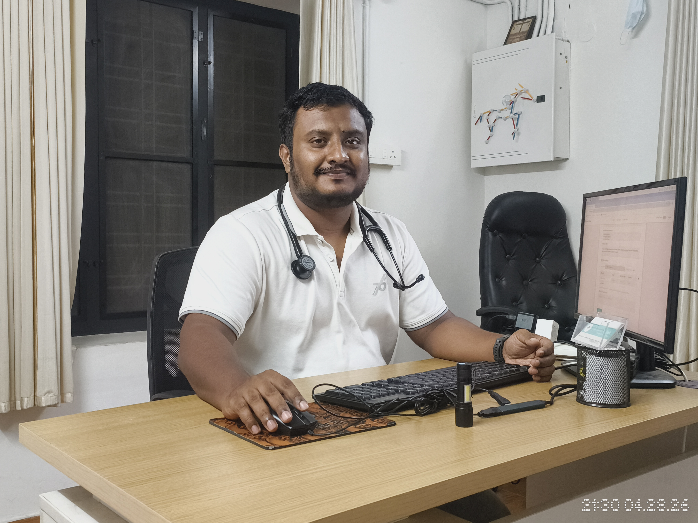

General medicine consultation
Evaluation and management for acute illness, fevers, and routine adult health concerns.
Dr. Peter Prince Pokkattu is an Internal Medicine Specialist consulting from his residence in Irumpanam, Kochi. He offers careful, unhurried consultations — from everyday concerns to complex, long-term medical conditions.

Dr. Peter Prince Pokkattu has practised internal medicine for over seventeen years, caring for adults across Ernakulam. His approach is simple: listen carefully, examine thoroughly, and recommend only what is genuinely needed.
He holds an MBBS and a DNB in Internal Medicine, and is a member of the Indian Medical Association (IMA).
Comprehensive primary-care services delivered with warmth and rigour.
Evaluation and management for acute illness, fevers, and routine adult health concerns.
Diabetes, hypertension, thyroid disorders, and long-term medical conditions.
Diagnosis and treatment of allergies, including allergy injections.
Skin biopsies, joint injections, and wound care performed in-clinic.
Cancer screening, periodic health checks, and lifestyle counselling.
Patient, attentive consultations for elders with multiple ongoing conditions.
A small selection of what visitors share about their experience.
“Dr. Peter listens patiently and never rushes you. The diagnosis was spot on and the medicines were minimal — exactly what I'd hoped for.”
“We've been visiting him for over a decade. He treats my parents, my children, and now my grandchildren. A true family doctor.”
“Honest, calm and very knowledgeable. He explains everything clearly and only prescribes what's necessary.”
Share a few details and we'll confirm your appointment over WhatsApp or a phone call. For urgent concerns, please call the clinic directly.
Irumpanam, Kochi,
Kerala
Exact address shared on appointment confirmation.